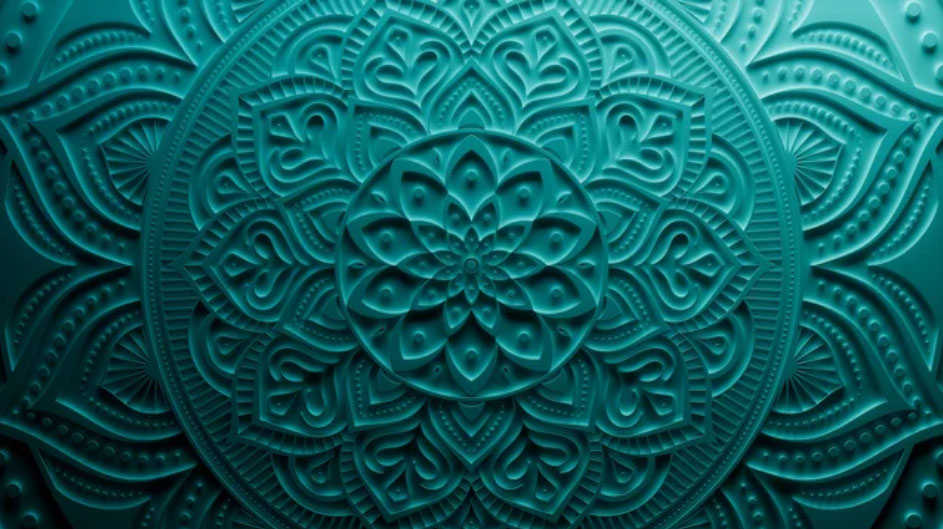
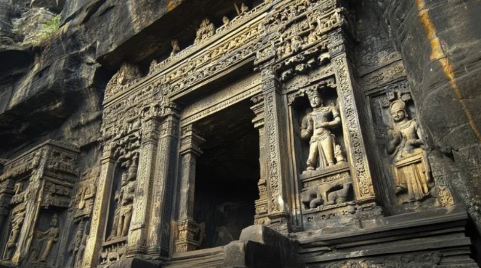
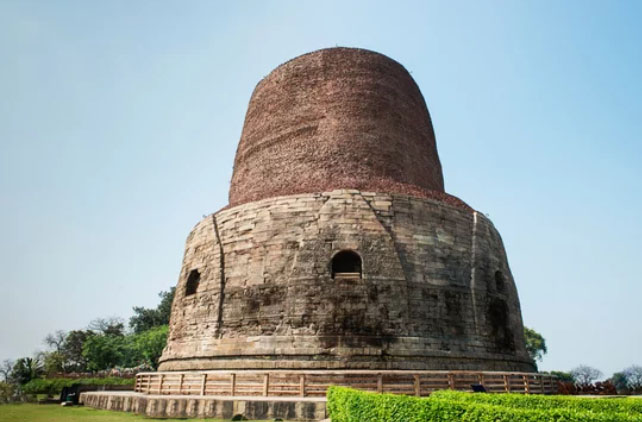
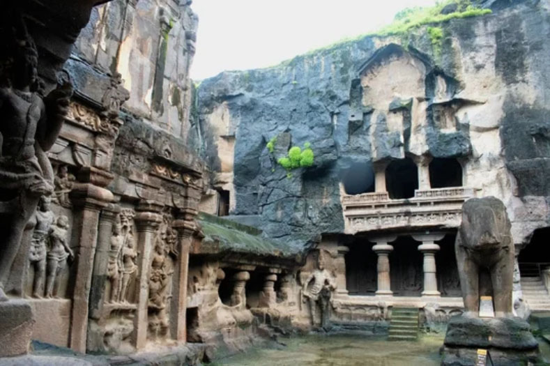
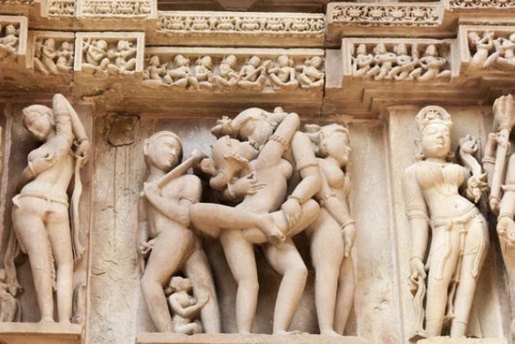
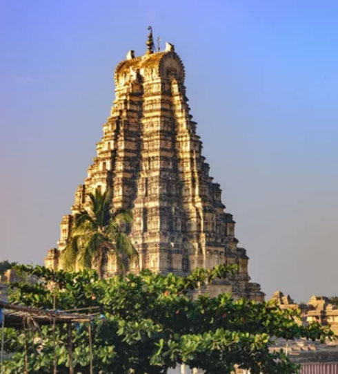
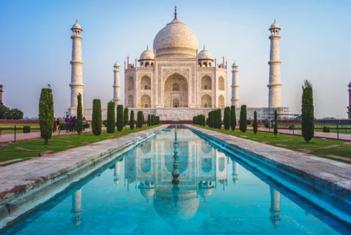
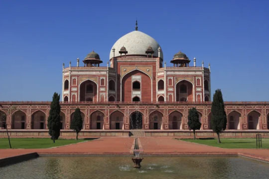
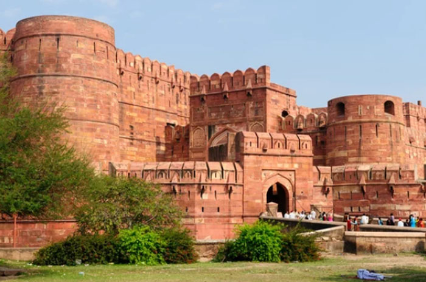
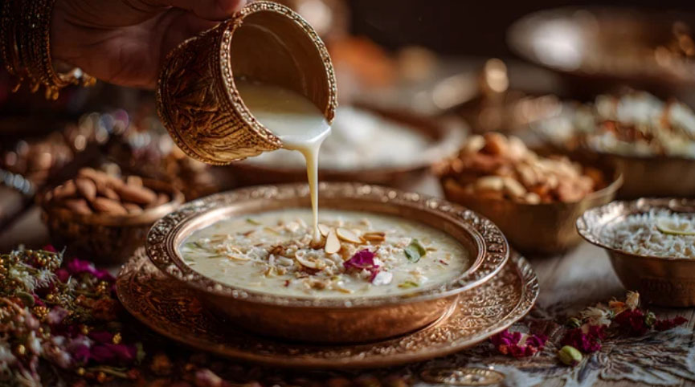

The Living Canvas of Civilizations
India: Where Ancient Faith Meets Imperial Grandeur
A land where the echoes of the Buddha, the devotion of Hindu stone-cutters, and the opulence of the Mughal emperors converge. From sacred caves to marble dreams, explore the timeless landmarks that define the spirit of the subcontinent.
Ancient Serenity
Buddhist Heritage
Originating in India, it is characterized by serene spirituality and ancient rock-cut art.

Ajanta Caves
Thirty rock-cut caves carved into a sheer cliff. A sacred center of art, home to vividly colored murals, including the world-famous image of the Bodhisattva Padmapani.

Sarnath (near Varanasi)
the place where the Buddha delivered his first sermon. Highlights include the massive cylindrical Dhamek Stupa and the Lion Capital of Ashoka, which became the model for India’s national emblem.
Bodh Gaya
the holiest site where the Buddha attained enlightenment. It is symbolized by the towering Mahabodhi Temple, rising over 50 meters, and the Vajrasana (Bodhi Tree) behind it.
Divine Power
Hindu Heritage
Dynamic sculptures of the gods and monumental stone architecture create an overwhelming sense of power and grandeur.

Ellora Kailasa Temple
Carved top-down from a single massive rock, it is the world’s largest monolithic rock-cut structure.

Khajuraho Group of Temples
Its walls are covered with sensual and intricately carved mithuna (amorous couple) sculptures, regarded as a masterpiece of medieval Indian sculpture.

Group of Monuments at Hampi
The ruined capital of the Vijayanagara Empire spreads across a stark landscape strewn with massive boulders. The stone chariot of the Vittala Temple and its exquisitely carved pillars are especially renowned.
Imperial Splendor
Mughal Heritage
A fusion of Persian and Indian styles, characterized by symmetrical beauty and the use of white marble and red sandstone decoration.

Taj Mahal
The pinnacle of Mughal architecture. Its white marble inlay work (pietra dura), depicting delicate floral motifs, represents the ultimate achievement in artistic craftsmanship.

Humayun’s Tomb
India’s first garden tomb. The contrast of red sandstone and white marble is striking, and it served as a design model for the Taj Mahal.

Agra Fort
A विशाल fortress that served as the residence of successive emperors. From the Musamman Burj (the “Tower of Captivity”), one can gaze upon the Taj Mahal—the very view once seen by the ill-fated emperor.
Spice Routes on a Plate
A vibrant tapestry of flavors—from fragrant curries and tandoor-fired breads to rich Mughal delicacies—rooted in centuries of culture and tradition.
Murgh Makhani
A rich and mild North Indian classic made with generous amounts of tomatoes, butter, and cream.
Tandoori Chicken
A classic staple marinated in yogurt and spices, then roasted at high heat in a traditional tandoor.

Kheer
A gently sweet rice pudding made by simmering rice with milk and sugar.
インド共和国の歴史
Ancient Roots, Timeless Legacy
LFrom Indus Valley origins to the grandeur of Mughal and British rule, discover a land shaped by deep spirituality, Silk Road wealth, and an enduring quest for independence.
古代
インダス文明（紀元前2600年頃～紀元前1900年頃）
モヘンジョダロやハラッパーなどの都市が栄えた。
ヴェーダ時代（紀元前1500年頃～紀元前500年頃）
アーリア人の移住とヴェーダ文化の発展。
十六大国（紀元前6世紀頃～紀元前5世紀頃）
ソーラサ・マハージャナパダとは紀元前6世紀頃から紀元前5世紀頃にかけて古代インドに形成され相互に争っていた諸国の総称。
コーサラ国(B.C.6c)＠ガンジス川中流域。B.C.5cマガダ国に併合
マガダ国(B.C.6c)＠ガンジス川中流域。
マウリヤ朝（紀元前321年～紀元前185年）
アショーカ王の時代に最盛期を迎え、仏教が広まる。また、アショーカ王の時代に最大版図となり、南端を除くインド亜大陸のほぼ全土を支配しました。
クシャーナ朝（紀元前1世紀 - 3世紀）
仏教が広まり、ガンダーラ美術が栄える。
中央アジアから北インドにかけて、1世紀から3世紀頃まで栄えたイラン系の王朝
グプタ朝（320年～550年頃）
ヒンドゥー教文化の発展と「黄金時代」と呼ばれる繁栄。北インドを中心に、東はベンガル湾から西はアラビア海まで広がりました。
ヴァルダナ朝（606年〜647年）
ハルシャ王による北インドの一時的統一。ハルシャ・ヴァルダナ王の一代で北インドの大部分を統一しましたが、グプタ朝に比べるとやや限定的な範囲でした。
サータヴァーハナ朝(アーンドラ朝)（紀元前1世紀～3世紀頃）
(都) プラティシュタナ(パイタン)説？＠南インド ドラヴィダ系。
アショーカ王時代のマウリヤ朝に朝貢したが、マウリヤ朝が崩壊するとデカン高原一帯を支配し、B.C.１世紀頃から急速に勢力を伸ばし、B.C.75年にはデカン高原西部を支配し、B.C. 28年頃までには北インドの大半を支配するようになり、A.D.１世紀はじめのガウタミープトラ・シャータカルニ王（在位106～130頃）の時に最盛期となり、北西インドのクシャーナ朝とも対抗する勢力となった。
中世
三つ巴の抗争時代（8世紀〜10世紀頃）
プラティハーラ朝（北インド）：ラージプートの先駆け。
パーラ朝（東インド）：仏教を保護（ナーランダー僧院など）。
ラシュトラクータ朝（デカン高原）：エローラ石窟寺院などを造営。
ラージプート時代（7世紀後半から13世紀初頭）
北インドに小国家が乱立。ガズナ朝・ゴール朝の侵攻に抵抗。
いずれもガズナ朝のマフムード、ゴール朝のムハンマドとの戦いに敗れ、ついにアイバクがトルコ系イスラーム教国の奴隷王朝をデリーに建設して以来、デリー＝スルタン朝というイスラーム政権の支配を受けることとなった。
デリー・スルターン朝（1206年～1526年）
イスラム教の影響が強まり、北インドを支配。
ムガル帝国（1526年～1857年）
アクバル大帝やシャー・ジャハーンの時代に文化と建築が発展。
チョーラ朝（9世紀〜13世紀）
南インド。海上貿易で繁栄し、東南アジアへも進出。
ヴィジャヤナガル王国（1336年～1646年）
南インドでヒンドゥー教文化が栄える。
近世（全土）
イギリス東インド会社の支配（1757年～1858年）
プラッシーの戦い以降、イギリスの影響が拡大。
藩王国の形成: マラーター同盟やマイソール王国などの有力勢力を軍事的に破り、順次「軍事保護条約（従属同盟）」を結ばせ、内政自治のみを認める藩王国として傘下に収めた。
イギリス領インド帝国（1858年～1947年）
「二つのインド」による統治。反乱の抑止: 1857年のインド大反乱の際、多くの藩王がイギリス側に味方したため、反乱鎮圧後、イギリスは藩王国の存続を保障し、自らの統治を支える「防波堤」として利用した。
直轄領（イギリス領インド）: イギリスが直接統治する地域（面積の約6割）。
藩王国（約560カ国）: イギリス皇帝（国王）への忠誠を条件に、現地の王が統治を継続した地域（面積の約4割）。
近現代・現代（全土）
インド独立運動（19世紀後半～1947年）
ガンディーやネルーらの指導のもと、独立を達成。
インド共和国（1947年～現在）
独立後、民主主義国家として発展。
インド・パキスタン分離独立（1947年）
イギリスからの独立と同時に、ヒンドゥー教徒主体のインドと、 イスラム教徒主体のパキスタンに分裂。大規模な人口移動と衝突が発生。
カシミール紛争（1947年〜現在）
インドとパキスタンが領有権を争う地域。戦争や軍事的緊張が続く。
現代インド（1947年～現在）
多様な文化と経済成長を背景に、世界的な影響力を持つ国へ。このように、インドの歴史は多様な文化と宗教、政治体制の変遷が特徴的です。